Repère les anomalies, clique dessus et choisis la bonne action. Molette de souris ou boutons +/− pour zoomer ; glisse l’image ou utilise les flèches pour regarder à gauche/droite.
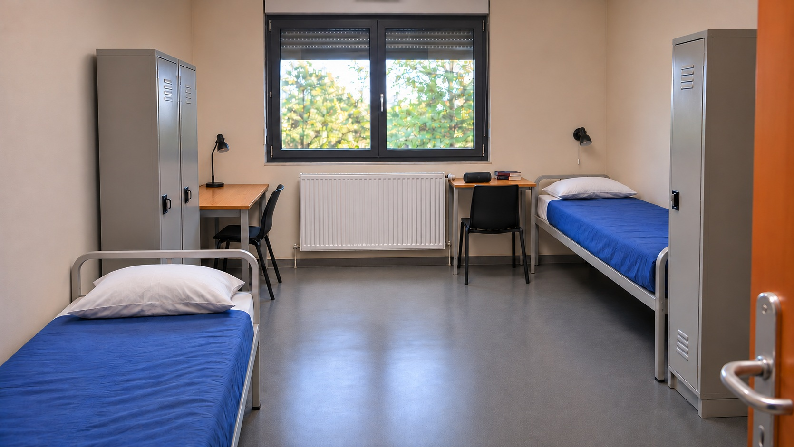
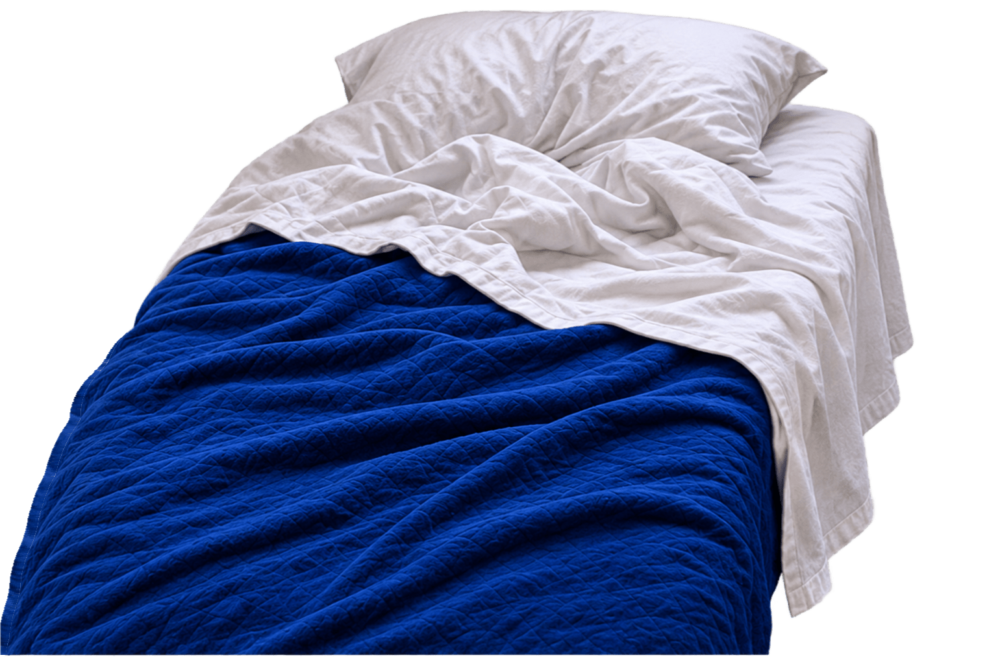
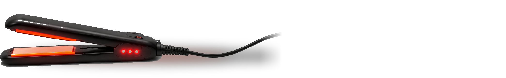
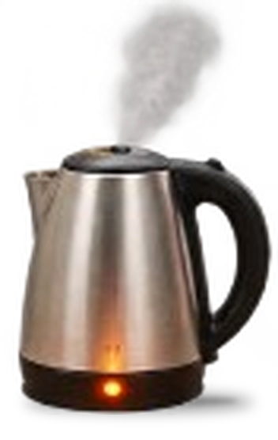
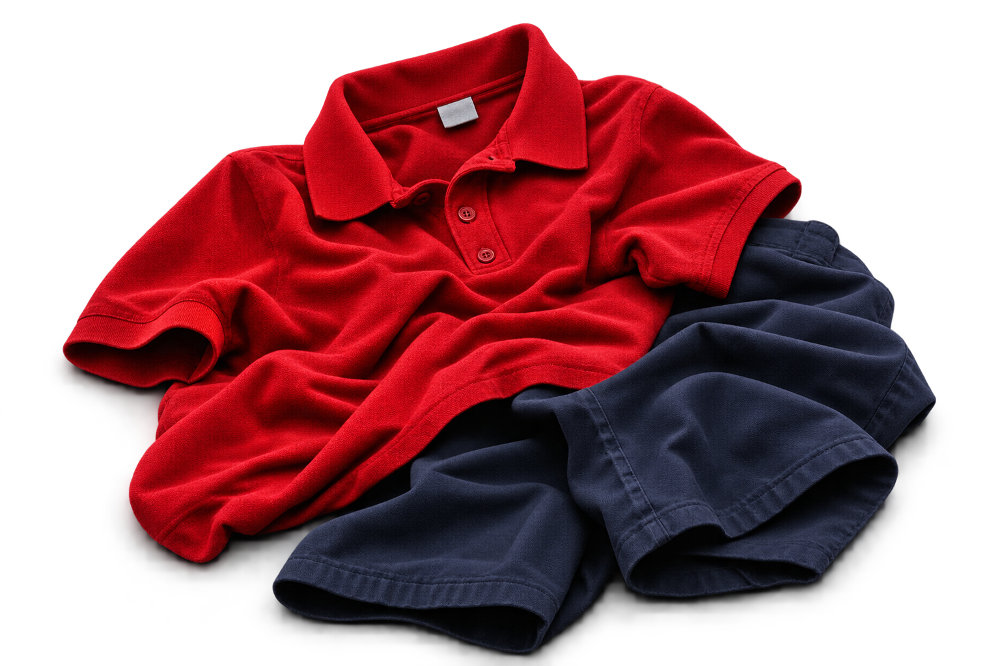
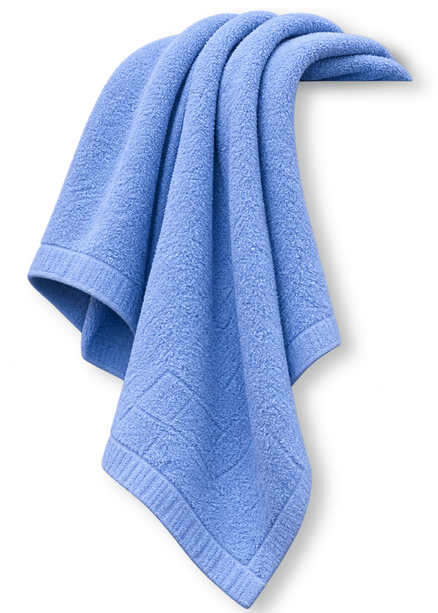
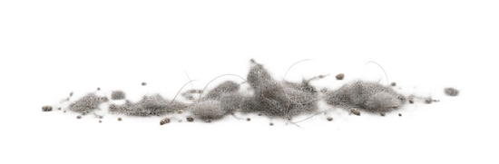
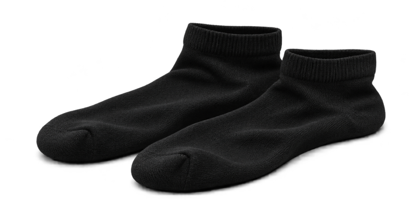
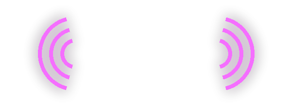
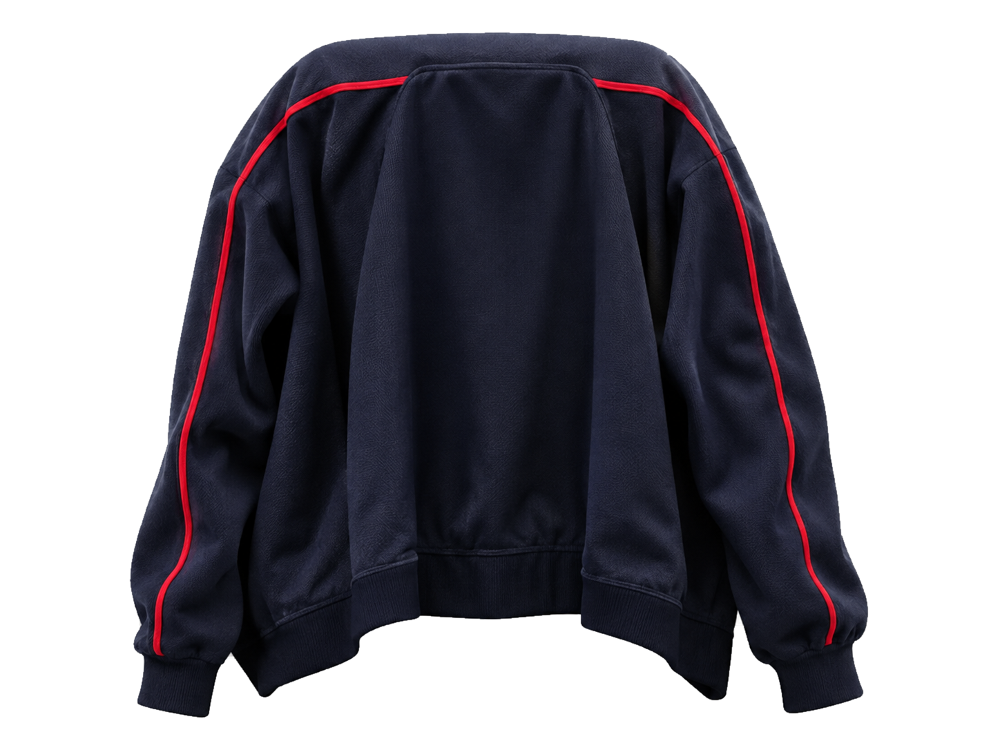
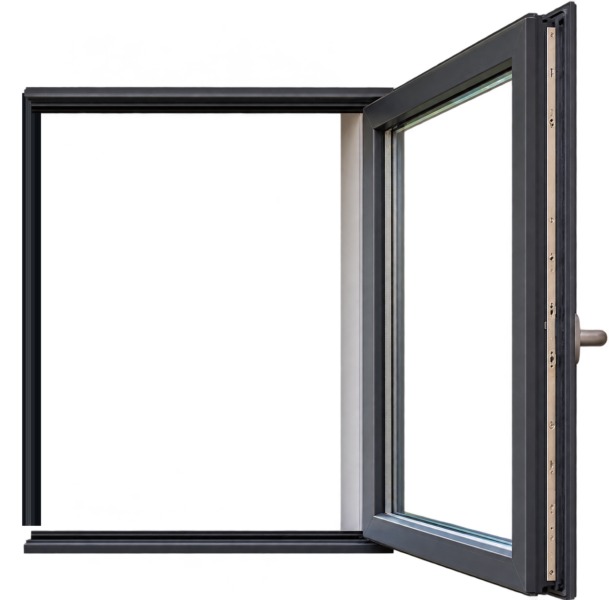
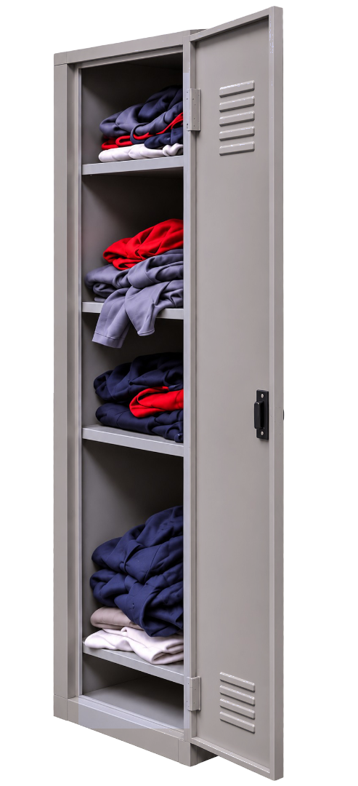
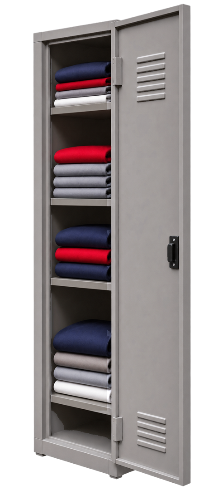
La mission commence lorsque tu appuies sur « Démarrer ».
100 %